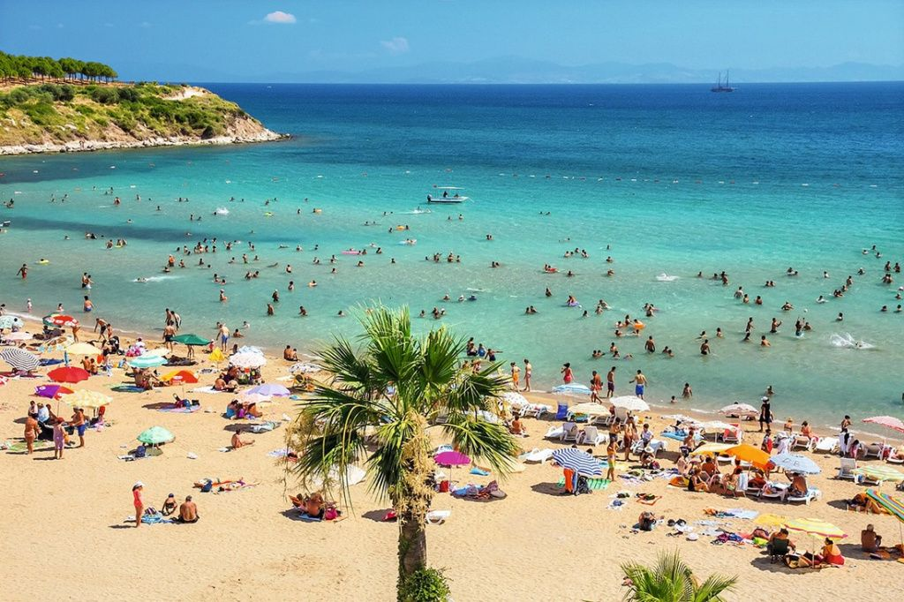
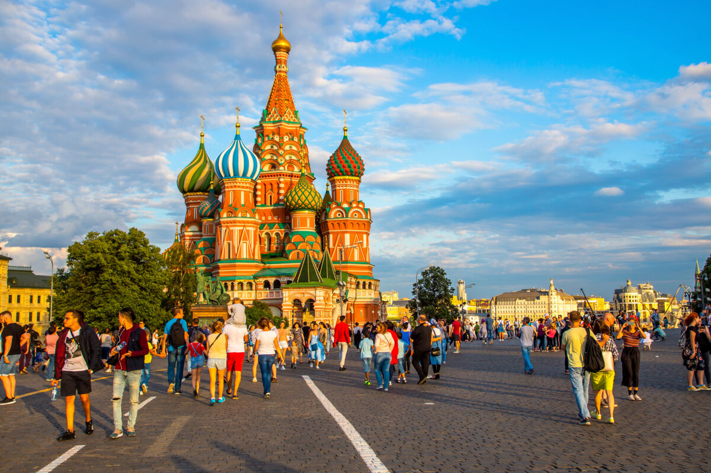

Пляжный туризм

Самый популярный вид отдыха, идеальный для релаксации. Включает отдых на морских побережьях,
занятия водными видами спорта, спа-процедуры и наслаждение местной кухней.
Популярные направления: Мальдивы, Бали, Таиланд, Испания.
- Релаксация и восстановление
- Водные развлечения
- Солнечные ванны и купание
Горный туризм

Активный отдых для любителей природы и физических нагрузок.
Включает альпинизм, треккинг, горные лыжи и скалолазание.
Развивает выносливость и дарит незабываемые виды.
Основные направления: Альпы, Гималаи, Анды, Кавказ.
- Треккинг и альпинизм
- Горнолыжные курорты
- Фотосафари и наблюдение за природой
Культурный туризм

Знакомство с историческим наследием, архитектурой, искусством и традициями разных народов. Посещение музеев, галерей, исторических памятников и участие в местных фестивалях. Популярно в Европе, Азии и странах Ближнего Востока.
- Экскурсии по историческим местам
- Посещение музеев и галерей
- Участие в культурных мероприятиях